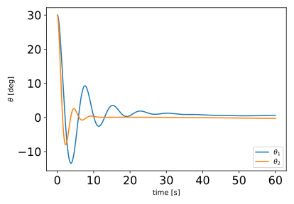
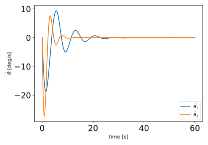
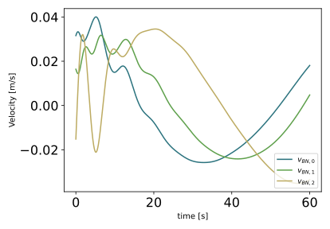
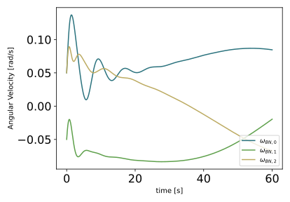
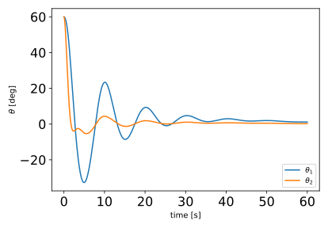
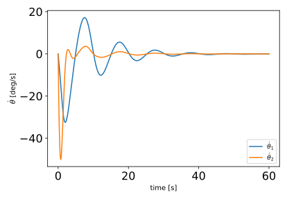
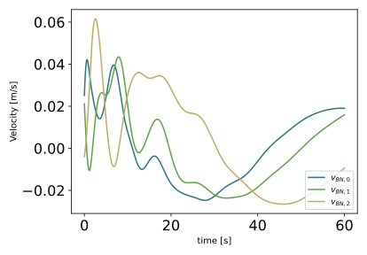
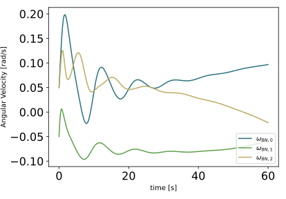

scenarioSpinningBodiesTwoDOF
Overview
This scenario demonstrates the capabilities of Module: spinningBodyTwoDOFStateEffector, which represents an effector with two spin axis. The two-degree-of-freedom formulation allows the simulation of one rigid body attached to the hub through a universal joint, or a chain of two rigid bodies each attached through a single hinge. The spin axis and mass distribution of the rigid bodies are arbitrary.
The scenario can be run with either one or two rigid bodies. The one-panel formulation consists of a cylindrical flat panel that rotates about two axis in a universal-joint configuration. The panel has similar dimensions to the hub. The two-panel formulation uses two flat cuboid panels that rotate about perpendicular hinges. The first panel connects directly to the hub, whereas the second connects to the first.
The script is found in the folder basilisk/examples and executed by using:
python3 scenarioSpinningBodiesTwoDOF.py
The scenario outputs two plots: one for the time history of both angles, and another for the time history of both angle rates. the scenario also creates a comprehensive Vizard simulation which creates appropriate to-scale models for each simulation type.
Illustration of Simulation Results
show_plots = True, numberPanels = 1
Here, only a single panel is simulated. The panel connects to the hub through a universal, dual-axis joint. The time history for both angles and angle rates is shown below. Note how decoupled the two angles are. This is because the module is simulating a universal joint, so each axis behaves independently from each other. The impact of the motion of the panel is also shown in the velocity and angular velocity plots. The initial transient in the time history of these two quantities matches the motion of the panel.
   show_plots = True, numberPanels = 2
In this case, two panels are simulated. Each rotates about a one-degree-of-freedom hinge. The spin axis are perpendicular to each other to show how any spin axis can be chosen. Note that in this case, there is much more significant coupling between the two angles, with them being in-phase with each other. As before, the transient motion of the velocity and angular velocity states match the motion of the panels.
   